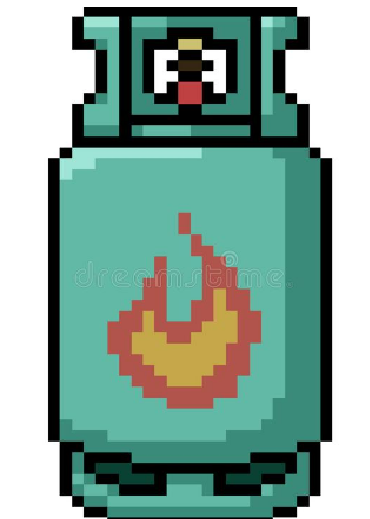
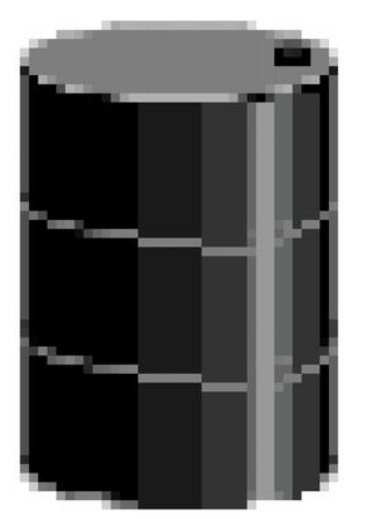
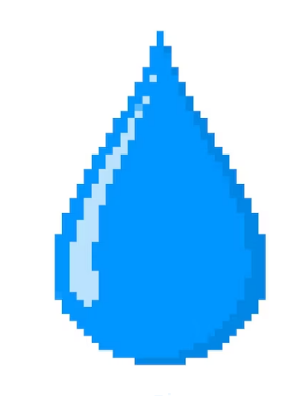

ALERTA!
Cambio Climatico!
El cambio climático es una de las mayores amenazas que enfrenta nuestro planeta en la actualidad, ya que puede tener consecuencias graves para la vida en la Tierra, incluyendo la extinción de especies, la escasez de agua y alimentos, el aumento del nivel del mar y el desplazamiento de comunidades enteras.
Es causado principalmente por la actividad humana, especialmente la emisión de gases de efecto invernadero como dióxido de carbono, metano y óxido nitroso. Estas emisiones se producen a partir de la quema de combustibles fósiles como el petróleo, el gas y el carbón para la energía, así como de la agricultura y la ganadería.
¿Que son las petroleras?
Las petroleras son empresas dedicadas a la exploración, extracción, refinación y distribución de petróleo y gas natural. Se dedican a la producción de combustibles fósiles que se utilizan para la generación de energía en todo el mundo.
Suelen ser grandes empresas con presencia en múltiples países y una gran influencia en la economía global. Algunas de las petroleras más grandes de Argentina incluyen empresas como YPF, Pan American Energy, Vista, Shell y Pluspetrol.
A pesar de su importancia en la economía global, han sido objeto de críticas por su impacto ambiental negativo, por la emisión de gases de efecto invernadero que producen y su papel en el cambio climático. En respuesta a estas críticas, algunas petroleras han comenzado a invertir en energías renovables y tecnologías limpias para reducir su impacto ambiental.
Fosiles vs Renovables
Combustibles Fosiles
Los combustibles fósiles son recursos naturales no renovables que se formaron a partir de organismos vivos que murieron hace millones de años y se sometieron a procesos geológicos y químicos. Los principales combustibles fósiles son el petróleo, el gas natural y el carbón.
 Los combustibles fósiles han sido una fuente importante de energía para la humanidad durante décadas, pero también tienen un impacto significativo en el medio ambiente, ya que su uso produce emisiones de gases de efecto invernadero que contribuyen al cambio climático. Por esta razón, se están explorando cada vez más alternativas a los combustibles fósiles, como la energía renovable y las tecnologías limpias.
Energias renovables y limpias
Son aquellas que se obtienen a partir de fuentes naturales que son inagotables o se regeneran a una velocidad mayor a la que se consumen. Como son la energía solar, la energía eólica, la energía hidráulica. Las tecnologías limpias son aquellas que se utilizan para reducir el impacto ambiental humano, incluyendo la producción de energía.
El desarrollo de energías renovables y tecnologías limpias es importante para reducir las emisiones de gases de efecto invernadero y mitigar los efectos del cambio climático. Además, estas tecnologías pueden ayudar a reducir la dependencia de los combustibles fósiles y mejorar la seguridad energética.
El cambio es ahora
La existencia de petroleras puede tener diversas consecuencias negativas en el medio ambiente, la salud humana y el cambio climático, entre otros. Algunas de estas consecuencias incluyen:
En general, la existencia de petroleras y la dependencia del petróleo y otros combustibles fósiles tienen una serie de efectos negativos en el medio ambiente, la salud humana y la sostenibilidad económica y social. Por esta razón, se están explorando cada vez más alternativas a los combustibles fósiles y tecnologías más limpias y sostenibles.
Si estas acá te encontraste con este afiche por la calle,
o te lo dio un amigue,
o te lo di yo mismo!
Gracias por escanear el QR, ingesar al link y visitar la página. 🖤
Si deseas obtener el afiche te dejo este boton!